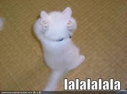

Mea Culpa
C'est ma faute
C'est ma faute
C'est ma très grande faute d'orthographe
Voilà comment j'écris
Giraffe
Inventaire
Une pierre
Deux maisons
Trois ruines
Quatre fossoyeurs
Un jardin
Des fleurs
Et un raton laveur
…
Les paris stupides
Un certain Blaise Pascal
etc… etc…
À la pêche à la baleine
À la pêche à la baleine, à la pêche à la baleine,
Disait le père d’une voix courroucée
À son fils Prosper, sous l’armoire allongé,
À la pêche à la baleine, à la pêche à la baleine,
Tu ne veux pas aller,
Et pourquoi donc?
Et pourquoi donc que j’irais pêcher une bête
Qui ne m’a rien fait, papa,
Le chat et le miroir - Par Florian
Philosophes hardis, qui passez votre vie
A vouloir expliquer ce qu'on n'explique pas,
Daignez écouter, je vous prie,
Ce trait du plus sage des chats.
Sur une table de toilette
Ce chat apperçut un miroir ;
Il y saute, regarde, et d'abord pense voir
Un de ses frères qui le guette.
Notre chat veut le joindre, il se trouve arrêté.
Surpris, il juge alors la glace transparente,
Et passe de l'autre côté,
Ne trouve rien, revient, et le chat se présente.
Il réfléchit un peu : de peur que l'animal,
Tandis qu'il fait le tour, ne sorte,
Sur le haut du miroir il se met à cheval,
Deux pattes par ici, deux par là ; de la sorte
Partout il pourra le saisir.
Alors, croyant bien le tenir,
Doucement vers la glace il incline la tête,
Apperçoit une oreille, et puis deux... à l'instant,
A droite, à gauche il va jetant
Sa griffe qu'il tient toute prête :
Mais il perd l'équilibre, il tombe et n'a rien pris.
Alors, sans davantage attendre,
Sans chercher plus longtemps ce qu'il ne peut comprendre,
Il laisse le miroir et retourne aux souris :
Que m'importe, dit-il, de percer ce mystère ?
Une chose que notre esprit,
Après un long travail, n'entend ni ne saisit,
Ne nous est jamais nécessaire.
